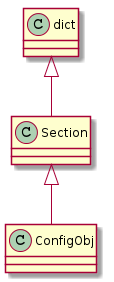

Here we’ll look at using ConfigObj to parse a user’s configuration file and make some comparisons to python’s ConfigParser.SafeConfigParser.
SafeConfigParser([defaults, dict_type, ...]) |
ConfigObj([infile, options, configspec, ...]) |
An object to read, create, and write config files. |
# python standard library
from StringIO import StringIO
import ConfigParser
from ConfigParser import SafeConfigParser
# third party
from configobj import ConfigObj
import configobj
the ConfigObj object inherits from the configobj.Section class which itself extends python’s dict.

So most retrievals will look like you’re using a dictionary of dictionaries.
Like ConfigParser it focuses on the ini format which has the basic for of:
[section]
option = value
I’ll be passing StringIO in to the constructor for ConfigObj, but in the real-world this would probably be a filename or opened file.
Unlike python’s ConfigParser, ConfigObj lets you put values in the configuration with no section header.
sample = ["name = John Bigboote"]
config = ConfigObj(sample)
print config['name']
John Bigboote
If we try this with SafeConfigParser:
safeconfigparser = SafeConfigParser()
sample = StringIO('name = John Bigboote')
try:
safeconfigparser.readfp(sample)
except ConfigParser.MissingSectionHeaderError as error:
print error
File contains no section headers.
file: <???>, line: 1
'name = John Bigboote'
ConfigObj also supports comma-separated lists by default.
sample = ["diseases = ebola, syphillis, cooties"]
config = ConfigObj(sample)
print config['diseases']
['ebola', 'syphillis', 'cooties']
sample = ["quote = What's this, then?"]
config = ConfigObj(sample)
print config['quote']
["What's this", 'then?']
Our quote’s comma caused config parser to split it in two. In this case you can set the list_values parameter to False
config = ConfigObj(sample, list_values=False)
print config['quote']
What's this, then?
Note
This parameter has to be set in the constructor, changing the objects ‘list_values’ attribute won’t work.
config = ConfigObj(sample)
config.list_values = False
print config['quote']
["What's this", 'then?']
This makes it difficult to have cases where you have lists and non-lists in the same configuration. The better way around this is to use quotation marks to identify strings.
text = """
quote = "What's this, then?"
strings = a, b, c
strings_quote = a, b, c, "What's this, then?"
""".splitlines()
config = ConfigObj(text)
for key, value in config.iteritems():
print "{0}: {1}".format(key, value)
quote: What's this, then?
strings: ['a', 'b', 'c']
strings_quote: ['a', 'b', 'c', "What's this, then?"]
The formatting of the values, options and comments are also slightly different. ConfigParser allows both <option> = <value> and <option> : <value>.
example = StringIO("""[test]
opt1 = 1
opt2 : 2""")
safeconfigparser = SafeConfigParser()
safeconfigparser.readfp(example)
print safeconfigparser.items('test')
[('opt1', '1'), ('opt2', '2')]
Whereas ConfigObj will raise an error if it encounters the <option>:<value> format.
example = StringIO("""[test]
opt2 : 2""")
try:
config = ConfigObj(example)
except configobj.ParseError as error:
print error
Invalid line ('opt2 : 2') (matched as neither section nor keyword) at line
2.
Comments are also a little different. ConfigParser allows both the pound sign (‘#’) and the semicolon (‘;’).
example = StringIO('''
[test]
opt1 = 1
# this is a comment
; and so is this
opt2 = 2''')
safeconfigparser.readfp(example)
print safeconfigparser.items('test')
[('opt1', '1'), ('opt2', '2')]
ConfigParser will only interpret the semi-colon as an inline comment.
example = StringIO("""
[test]
opt1 = 1 ; is this a comment?
opt2 = 2 # this is not a comment
""")
safeconfigparser.readfp(example)
print safeconfigparser.items('test')
[('opt1', '1'), ('opt2', '2 # this is not a comment')]
ConfigObj only allows the pound sign but it interprets them as comments when used in-line.
example = StringIO("""
[test]
opt1 = 1 ; this is not a comment
opt2 = 2 # this is a comment
""")
config = ConfigObj(example)
print config['test']
{'opt1': '1 ; this is not a comment', 'opt2': '2'}
ConfigObj handles sections much like ConfigParser so it can be used in most cases as a drop-in replacement for ConfigParser.
sample = StringIO("""
[grape]
name = ape
value = 1
""")
config = ConfigObj(sample)
print config
{'grape': {'name': 'ape', 'value': '1'}}
Looking at the output you can see that adding sections adds an inner dictionary. To access the values you still use the dict interface.
print config['grape']['name']
print config['grape']['value']
ape
1
To add more structure to the configuration you can also add sub-sections by adding more brackets around the headers.
sample = StringIO("""
[top]
top_value = 0
[[level1]]
level1_value = 1
[[[level2]]]
level2_value = 2
[topcow]
topcow_value = moo
""")
config = ConfigObj(sample)
print "Top Value: ", config['top']['top_value']
print "Level1 Value: ", config['top']['level1']['level1_value']
print "Level2 Value:", config['top']['level1']['level2']['level2_value']
print "Top Cow: ", config['topcow']['topcow_value']
Top Value: 0
Level1 Value: 1
Level2 Value: 2
Top Cow: moo
ConfigObj doesn’t like options that don’t have values.
text = """
[MODULE]
packagename.modulename
"""
try:
config = ConfigObj(text.splitlines())
except configobj.ParseError as error:
print error
Invalid line ('packagename.modulename') (matched as neither section nor key
word) at line 3.
ConfigParser, on the other hand, will allow it.
parser = SafeConfigParser(allow_no_value=True)
parser.readfp(StringIO(text))
for option in parser.options('MODULE'):
print option
packagename.modulename
ConfigParser will read a section labeled ‘DEFAULT’ and add its values to all other sections.
text = """
[DEFAULT]
pig = little
[animals]
cow = daisy
"""
parser = SafeConfigParser()
parser.readfp(StringIO(text))
for option in parser.options('animals'):
print "{0}: {1}".format(option, parser.get('animals', option))
cow: daisy
pig: little
ConfigObj, on the other hand, considers it just another section.
config = ConfigObj(text.splitlines())
section = config['animals']
print "animals"
for option in section:
print "{0}: {1}".format(option, section[option])
section = config['DEFAULT']
print '\nDEFAULT'
for option, value in section.iteritems():
print "{0}: {1}".format(option, value)
animals
cow: daisy
DEFAULT
pig: little